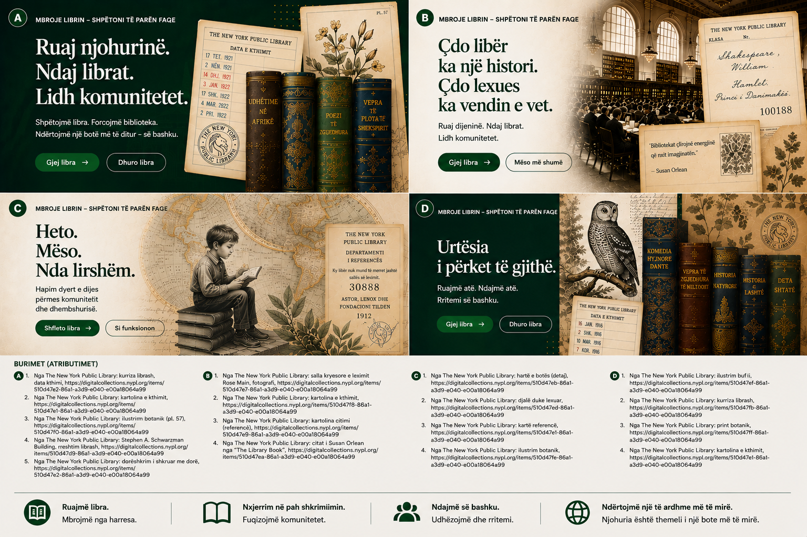

Shembujt institucionalë në këtë faqe shërbejnë vetëm si paraqitje konceptuale e rrjedhës së punës dhe nuk nënkuptojnë partneritete ose zbatime ekzistuese.
Udhëzues për institucione
Shqyrtoni ofertat e librave me mjaftueshëm strukturë për vendime reale.
Let Books është menduar për procese miqësore ndaj bibliotekave, por edhe për shkolla, universitete, arkiva dhe shoqata që kanë nevojë për shqyrtim praktik dhe koordinim të marrjes.

Kur ky udhëzues është për ju
- Shqyrtoni libra që ofrohen nga donatorët.
- Ju duhet një përzgjedhje e strukturuar në vend të email-eve joformale.
- Doni t'i lidhni vendimet me identifikues të qëndrueshëm.
- Ju interesojnë burimi i të dhënave, gjendja dhe mundësia e marrjes.
Kush mund të jetë institucion
- Biblioteka publike dhe akademike
- Shkolla dhe universitete
- Arkiva dhe koleksione të specializuara
- Shoqata dhe organizata të tjera partnere
Procesi bazë i shqyrtimit
Procesi MVP është qëllimisht i thjeshtë sepse shumë institucione do të pranojnë fillimisht një tabelë, jo një portal të ri.
Merrni eksportin
Hapni listën me ID të qëndrueshme dhe metadata të lexueshme.
Shënoni vendimet
Zgjidhni duam, ndoshta ose nuk duam dhe shtoni koment sipas nevojës.
Ktheni skedarin
Përdorni një rrjedhë pune të njohur pa llogari të re të detyrueshme.
Importoni vendimet
Donatori i kthen vendimet tuaja pa lidhje të paqarta sipas titullit.
Krijoni listën e marrjes
Kopjet e kërkuara grupohen sipas vendndodhjeve reale.
Koordinoni dorëzimin
Marrja dhe dërgesa mbeten jashtë platformës derisa funksionet e ardhshme ta zgjerojnë shprehimisht këtë.
Pse është i rëndësishëm burimi i të dhënave
Institucionet duhet të dinë nëse një e dhënë vjen nga njeriu, OCR, katalog i jashtëm ose import. Besimi dhe statusi i shqyrtimit duhet të jenë të dukshëm.
Logjistika fizike ende vendos
Kopja e kërkuar është e dobishme vetëm kur dikush mund ta gjejë. Lista e marrjes sipas dhomës, raftit dhe kutisë e bën këtë të realizueshme.
Shembull: Një bibliotekë qyteti, një departament universitar dhe një arkiv lokal shqyrtojnë një eksport nga një donator privat dhe secili zgjedh kopje të ndryshme sipas gjendjes dhe përshtatshmërisë së përmbajtjes.